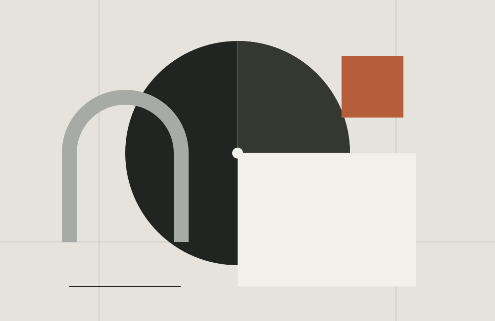

PERODS. A.
El Bosque, Cádiz.
Una identidad en desarrollo.

01 / PRESENTACIÓN
Un nombre.
Un punto de partida.
Perod S. A.
El Bosque, Cádiz.
Esta presentación parte de la denominación y la localidad facilitadas para el proyecto. La actividad específica y la identidad del establecimiento están pendientes de confirmación.
02 / IDENTIDAD VISUAL
UNA PROPUESTA ORIGINALLa forma
de un nombre.
Tipografía, proporción y espacio. Una propuesta editorial construida alrededor de Perod S. A.
Marfil, carbón y un acento óxido. Un lenguaje visual neutro, planteado para esta presentación.
La composición y el tratamiento del nombre forman parte de una propuesta de diseño en revisión.03 / INFORMACIÓN
DATOS Y CONTACTOLa información,
en su lugar.
Los datos de esta presentación se completarán cuando estén contrastados con el titular del establecimiento.
- Denominación facilitada
- Perod S. A.
- Localidad de referencia
- El Bosque, Cádiz
- Actividad y servicios
- Pendientes de confirmación
- Dirección completa
- Pendiente de confirmación
- Canales de contacto
- Pendientes de confirmación
La dirección de atención, el teléfono y el correo electrónico están pendientes de verificación.
Referencias públicas y alcance de la verificación
El BORME recoge una sociedad con la denominación Perod S. A. Una referencia municipal de Grazalema de 2015 la vincula con la finca Rancho Las Cuevas. La correspondencia de esa sociedad con el establecimiento de El Bosque sigue pendiente de confirmación.